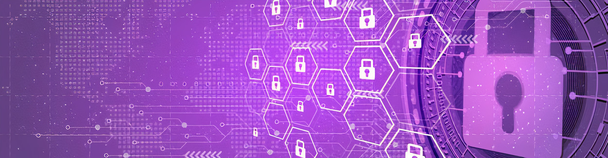

Sumário
- Introdução
- Comercio Eletrônico
- Como se proteger no comercio eletrônico
- Códigos Maliciosos
- Exemplos de códigos maliciosos
- Como evitar códigos maliciosos
- Internet Banking
- Como evitar ataques de phishing do internet Banking
- Conclusão
- Referências
1.Introdução
O princípio de funcionamento da Internet é enviar informações de um computador para outro até que cheguem ao seu
destino. Quando os dados são enviados do ponto A ao ponto B, cada computador no meio tem a oportunidade de
observar o que está sendo enviado. Ou seja, você está procurando algo para comprar na World Wide Web, acessando
site do seu Banco, ou se cadastrando em alguma plataforma, será solicitado que você insira o número do cartão de
crédito, assim como seu nome, cpf, endereço entre outras informações pessoais.
é necessário ter conhecimento sobre a legitimidade da empresa ou site no qual você está acessando e passando suas
informações.
Além de sites falso, a internet está inundada de pessoas más intencionadas querendo pegar informações sigilosas,
sejam elas senhas de e-mail, senhas de acesso a determinado site, fotos pessoais, áudios, vídeos, ou seja,
qualquer tipo de dado que trafegue pela rede pode servir para alguém com intenção de gerar algum prejuízo.
2.Comercio Eletrônico
Hoje, graças à Internet, as pessoas podem comprar produtos sem sair de casa, sem se preocupar com horários
e sem esperar na fila. Infelizmente, alguns golpistas usam a conveniência do comércio eletrônico para cometer
fraudes. Assim como existem lojas, sites e vendedores confiáveis, também existem aqueles que visam prejudicar o
consumidor, causando prejuízos e auferindo benefícios econômicos.
Os golpes envolvendo comércio eletrônico são aqueles que procuram explorar a relação de
confiança existente entre as partes envolvidas na transação comercial. Alguns exemplos de golpes deste tipo são:
- Golpe do site falso (phishing): um golpista pode criar um site falso, similar ao site
original, e induzir os clientes a fornecerem dados pessoais e financeiros, achando que estão no site
verdadeiro.
- Golpe do site de comércio eletrônico fraudulento: um golpista pode criar um site
fraudulento, com o objetivo de enganar os clientes que, após efetuarem os pagamentos, não recebem as
mercadorias. Também pode anunciar promoções em sites de compras coletivas e, assim, conseguir grande
quantidade de vítimas em um curto intervalo de tempo
- Golpe do site de leilão e venda de produtos: um golpista pode usar um site deste tipo para
vender produtos que nunca serão entregues. Também pode usar os dados pessoais e financeiros envolvidos na
transação para outros fins
2.A Como se proteger no comercio eletrônico
- Utilize sempre um computador seguro;
- com a versão mais recente de todos os programas instalados;
- com todas as atualizações aplicadas;
- com mecanismos de segurança instalados e atualizados, como antimalware, AntiSpam, e firewall pessoal;
- Evite usar computadores de terceiros;
- Acesse o site/loja digitando o endereço diretamente no navegador web;
- evite seguir ou clicar em links recebidos em mensagens;
- não utilize sites de busca para localizar o site/loja de comércio eletrônico;
3. Códigos Maliciosos
O código malicioso, também conhecido como pragas e malware, é um programa projetado para realizar ações
prejudiciais e atividades maliciosas em um computador. Eles também são usados como intermediários,
possibilitando golpes, ataques e envio de spam. Embora estejamos falando de computadores, outros dispositivos de
computador também podem ser infectados por código malicioso, como seus dispositivos de rede e dispositivos
móveis (tablets, telefones celulares, smartphones, etc.).
Um atacante pode instalar um código malicioso após invadir um equipamento ou explorando alguma vulnerabilidade
existente nos programas nele instalados.
Seus equipamentos também podem ser infectados caso você:
- acesse páginas web maliciosas, usando navegadores vulneráveis
- acesse mídias removíveis infectadas, como pen drives
- execute arquivos infectados, obtidos em anexos de mensagens eletrônicas, via mídias removíveis, em páginas
web, redes sociais ou diretamente de outros equipamentos.
Após infectar o seu equipamento, o código malicioso pode executar ações como se fosse você, como acessar
informações, apagar arquivos, criptografar dados, conectar-se à Internet, enviar mensagens e ainda instalar
outros códigos maliciosos. A melhor prevenção contra os códigos maliciosos é impedir que a infecção ocorra pois
nem sempre é possível reverter as ações danosas já feitas ou recuperar totalmente seus dados.
3.A Exemplos de códigos maliciosos.
- VíRUS
- CAVALO DE TROIA (TROJAN)
- RANSOMWARE
- BACKDOOR
- WORM
- RAT (REMOTE ACCESS TROJAN)
- BOT
- ZUMBI
- BOTNET
- SPYWARE
- KEYLOGGER
- SCREENLOGGER
- ADWARE
- ROOTKIT
3.B Como evitar códigos maliciosos.
Mantenha seus equipamentos atualizados:
- Use apenas programas originais.
- Tenha sempre as versões mais recentes dos programas instalados.
- Instale todas as atualizações disponíveis, principalmente as de segurança.
- Crie um disco de recuperação e tenha-o por perto no caso de emergências.
Instale um antivírus:
- Mantenha o antivírus atualizado, incluindo o arquivo de assinaturas.
- atualize o arquivo de assinaturas pela rede, de preferência diariamente.
- Configure o antivírus para verificar automaticamente toda e qualquer extensão de arquivo, arquivos anexados
aos e-mails, obtidos pela Internet e os discos rígidos e as unidades removíveis.
- Verifique sempre os arquivos recebidos, antes de abri-los ou executá-los.
- Evite executar simultaneamente diferentes antivírus.
- eles podem entrar em conflito, afetar o desempenho do equipamento e interferir na capacidade de
detecção um do outro.
- Crie um disco de emergência de seu antivírus.
- use-o se desconfiar que o antivírus instalado está desabilitado/comprometido ou que o comportamento
do equipamento está estranho.
Use um firewall:
- Assegure-se de ter um firewall pessoal instalado e ativo.
4. Internet Banking
Com o banco online, você pode realizar as mesmas operações em uma agência bancária sem entrar na fila ou ficar
restrito ao horário comercial. Mas é importante lembrar que se você não tomar cuidado ao usar um computador ou
dispositivo móvel, poderá enfrentar alguns riscos no banco online, incluindo: perda financeira, invasão de
privacidade, violação de sigilo bancário e participação involuntária em esquemas de fraude.
Os golpistas procuram enganar e persuadir os potenciais vítimas a fornecerem informações sensíveis ou a
realizarem ações, como executar códigos maliciosos e acessar páginas falsas (phishing). Para isso costumam
utilizar temas como:
- atualização de cadastro e de cartão de senhas
- sincronização de tokens
- lançamento e atualização de módulos de proteção
- comprovante de transferência e depósito
- novas campanhas, como lançamento de produtos e unificação de bancos e contas
- cadastro/recadastro de computadores
- suspensão de acesso.
- Outras formas de golpes usadas são:
- disponibilizar aplicativos maliciosos que, se instalados, podem coletar seus dados
- efetuar ligações telefônicas tentando se passar, por exemplo, pelo gerente do seu banco e solicitar seus
dados
- explorar possíveis vulnerabilidades em seu computador ou dispositivo móvel para instalar códigos maliciosos
- explorar possíveis vulnerabilidades em equipamentos de rede, como senhas fracas ou padrão
- coletar informações sensíveis que estiverem trafegando na rede sem criptografia.
4.A Como evitar ataques de phishing do internet Banking.
Ao acessar o site do banco:
- Certifique-se de usar computadores e dispositivos móveis seguros
- Digite o endereço do site bancário diretamente no navegador web
- evite seguir ou clicar em links recebidos via mensagens eletrônicas (e-mails, mensagens SMS, redes
sociais, etc.)
- não utilize sites de busca para localizar o site bancário geralmente o endereço é bastante
conhecido
- Sempre acesse sua conta usando a página ou o aplicativo fornecido pelo próprio banco
- Antes de instalar um módulo de proteção, certifique-se de que o autor do módulo é realmente a instituição em
questão
- Evite usar dispositivos móveis e computadores de terceiros (como lan houses e Internet cafés).
- não há garantias de que os equipamentos estejam seguros
5. Conclusão
Diante disso devemos ter muito cuidado com o que fazemos e acessamos na internet pois pegar esse tipo de
criminoso ainda é muito complicado, porque a pirataria técnica é quase impossível de detectar e qualquer pessoa
pode obter facilmente as ferramentas necessárias em serviços eletrônicos conectados à Internet. Outra
dificuldade é que mesmo que peguemos um dos criminosos como prová-lo, porque quase não há evidências para esse
tipo de pirataria, não há evidências, porque o judiciário pode processar e julgar sem seus maiores instrumentos.
6. Referências
Cartilha para a segurança na internet. Disponível em: https://cartilha.cert.br/. Acesso em: 04/08/2021.